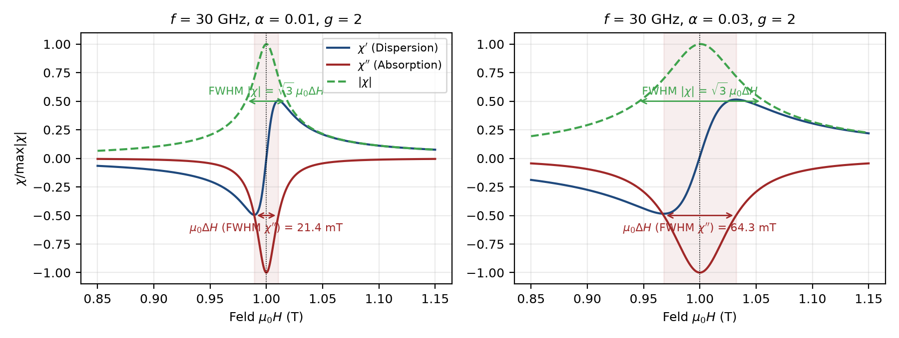
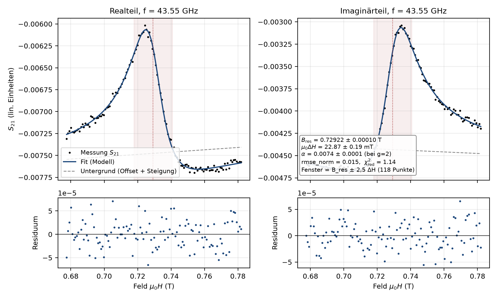
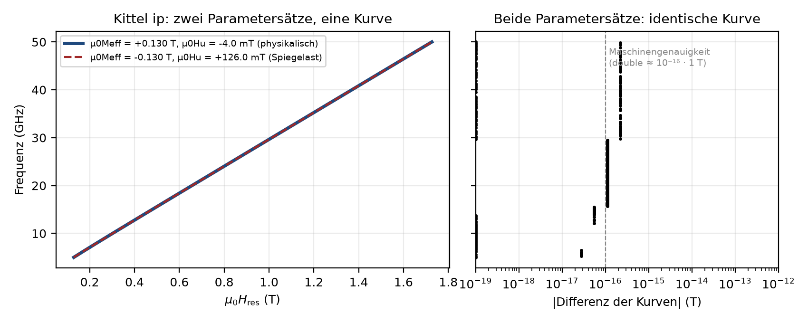

Physik und Fit¶
Suszeptibilität (oop, Notebook-Form, chi_oop) mit d = µ0H − µ0M_eff, N = γ⁴d⁴ + 2(α²−1)γ²d²ω² + (1+α²)²ω⁴:
χ' = γ²µ0 d (γ²d² + (α²−1)ω²) / N
χ'' = −αγµ0ω (γ²d² + (1+α²)ω²) / N Resonanz: µ0H = µ0M_eff + ω/γ (intern µ0M_eff = B_res − ω/γ)
µ0ΔH = 2ωα/γ (FWHM von χ'', Müller 2.27)

Einzelfit-Modell (s21_modell, 8 Parameter, Re/Im simultan, ungewichtet):
S21(B) = A·e^{iφ}·χ_oop(B; B_res, α, ω, γ) + (o_re + i o_im) + (s_re + i s_im)(B − B_ref)
| Parameter | Schranke |
|---|---|
B_res |
im Fenster (verbindlich) |
alpha |
[1e-5, alpha_max], Standard alpha_max = 0.1 (GUI bis 2) |
phi |
[−2π, 2π] |
A, Offsets, Steigungen |
frei |
Optimierer: lmfit leastsq (Levenberg–Marquardt/MINPACK), Schranken per MINUIT-Transformation, φ-Neustart um π bei fehlender Kovarianz. Startwerte datengetrieben; α_start = γ·FWHM(|χ|)/(2√3·ω).
Mehrere Moden (Korridore, fit/korridor.py, fitte_mode) – z. B. zwei nahe Dips oder eine vermiedene Kreuzung: kein Summenfit. Jede Mode hat einen Korridor (Ankerpunkte an wenigen Frequenzen, dazwischen linear) und wird je Frequenz als Einzelfit mit einer Polder-Linie ausschließlich auf den Messpunkten im Korridor gefittet; Punkte außerhalb sind maskiert. Startwert B_res aus dem lokalen Dip im Korridor, sonst vom Nachbarn; Nachfenster ±2,5·ΔH innerhalb des Korridors. Weniger als 12 Punkte oder ΔH unter 1,5 Feldschritten → problematisch. Kittel/LLG und Export je Mode getrennt.

Kittel / LLG (kittel_llg.py, curve_fit):
oop: B_res = µ0M_eff + 2πf/γ (2.24)
ip: B_res = √[(2πf/γ)² + (µ0M_eff/2)²] − µ0M_eff/2 − µ0H_u (2.26), Schranke µ0M_eff ≥ 0, intern g-parametrisiert
LLG: µ0ΔH(f) = µ0ΔH_0 + (4π/γ)·α·f (2.28), γ aus Kittel übernommen
Standard ungewichtet (wie FTF); Option w = 1/u². absolute_sigma=False: Parameterfehler skalieren mit der Punktstreuung. u(g) = ħ/µ_B·u(γ); u(α)/α = √[(u(m)/m)² + (u(γ)/γ)²].

Einstellbar (Strg+P): g (Start), γ festhalten, Geometrie oop/ip, Fensterfaktor 8, R²-Schwellen 0,9, Gewichtung aus, α-Obergrenze 0,1, α-Plausibilitätsgrenze (0 = α_max/2), Nachfenster 2,5, Resonanzen je Linescan 1, Nachfits bestätigen an. Speicher-/ladbar als Voreinstellung (Datei → Einstellungen).
Quellen: Müller 2023 Kap. 2; Notebook Chi_Fit_Functions_and_Inductances_2020-04-06.nb; Maier-Flaig 2018; Protokoll 2026-05-08; ABW/GUM.